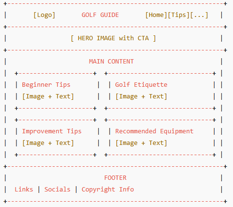

Site Name
Name: How to Get Into Golfing
Description: This site is focused on helping beginners learn about golfing, including golf etiquette, tips for getting started, and ways to improve their skills.
Optional Domain Availability: beginnergolfing.com
Site Purpose
The site provides resources for beginners to learn about golfing, including tips for getting started, golf etiquette, and strategies to improve their skills. It also includes recommendations for equipment and practice routines.
Scenarios
- What are the basic rules of golf for beginners?
- How can I improve my golf swing?
Color Schema
- #2a9d8f (Teal): Used for headings and accents.
- #264653 (Dark Teal): Used for background colors and footer.
- #f4f4f4 (Light Gray): Used for the page background.
- #333 (Dark Gray): Used for body text.
Typography
- Lobster: Used for headings and titles.
- Roboto: Used for body text and paragraphs.
Wireframe
Mobile View:
Desktop View:
